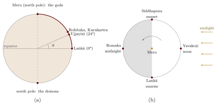
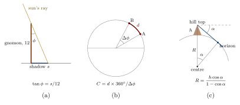

Chapter 3: The Spherical Earth of the Astronomers¶
mṛjjalaśikhivāyumayo bhūgolaḥ sarvato vṛttaḥ
“The earth-globe, made of earth, water, fire and air, is round on all sides.”
— Āryabhaṭa, Āryabhaṭīya, Golapāda 6 (499 CE)
The astronomer Āryabhaṭa tells us that he was twenty-three years old when 3,600 years of the Kali age had passed, that is, in 499 CE, the year usually taken as the date of his short Sanskrit treatise on mathematics and astronomy, the Āryabhaṭīya. He says that he set out the knowledge honoured at Kusumapura, usually identified with Pāṭaliputra (Patna). The work has 121 verses in four sections: the Gītikāpāda, which gives his astronomical parameters in a compact alphabetic notation; the Gaṇitapāda, on mathematics; the Kālakriyāpāda, on the reckoning of time and planetary motion; and the Golapāda, on the sphere (Clark 1930; Shukla and Sarma 1976).
The Āryabhaṭīya is not the first Indian text to treat the earth as a globe—older astronomical works, now known only from Varāhamihira’s summary in the Pañcasiddhāntikā, already did so, partly under the influence of Hellenistic astronomy—but it is the earliest surviving Indian treatise to set out a complete mathematical astronomy on that basis. From it, and from the works of Brahmagupta, Bhāskara I, Lalla, Bhāskara II and their successors, comes the mathematical geography of India: the spherical earth, its size, the reference meridian, latitude and the correction for longitude (Plofker 2009; Pingree 1981).
3.1 The Earth as a Globe¶
Āryabhaṭīya, Golapāda 6
vṛttabhapañjaramadhye kakṣyāpariveṣṭitaḥ khamadhyagataḥ
mṛjjalaśikhivāyumayo bhūgolaḥ sarvato vṛttaḥ
“In the middle of the circular cage of the stars, surrounded by the orbits [of the planets], in the centre of space, is the earth-globe, made of earth, water, fire and air, round on all sides.”
The earth, in this model, is a small sphere at the centre of a much larger celestial sphere. It is unsupported: later astronomers, such as Bhāskara II, explicitly reject the older ideas that the earth rests on a tortoise, a serpent or elephants, and argue that it holds itself in place by its own power. People live all round it, and each sees himself on top (Plofker 2009).
3.1.1 Rotation of the Earth¶
Āryabhaṭa’s best-known doctrine also has a geographical side. He held that the daily turning of the heavens is only apparent and that it is the earth that turns, and he described the effect from the standpoint of an observer at a fixed place on the globe: Laṅkā, the zero point of his mathematical geography (Section 3.2).
Āryabhaṭīya, Golapāda 9
anulomagatir nausthaḥ paśyaty acalaṃ vilomagaṃ yadvat
acalāni bhāni tadvat samapaścimagāni laṅkāyām
“Just as a man in a boat moving forward sees stationary objects moving backward, so at Laṅkā the stationary stars [are seen] moving due west.”
For the geographer the point of the image is the observer’s place. On the equator, under the reference meridian, the stars rise due east and set due west; at any other latitude the same rotation is seen at a slant, and the astronomers’ rules for latitude, day length and local time all follow from that. How the doctrine should be read, how the following verse on the pravaha wind fits with it, and why most later astronomers, from Varāhamihira and Brahmagupta onward, rejected it are questions of the history of astronomy, treated in Volume 12, Khagola Jyotiṣa (Chapter 9). It is enough here that Āryabhaṭa’s rotating earth remained at the centre of the universe, so that it is not heliocentrism (Plofker 2009; Shukla and Sarma 1976), and that the dispute made no difference to mathematical geography: as al-Bīrūnī remarked, positions and times come out the same whether the earth or the heavens are taken to turn (Sachau 1910).
3.2 Laṅkā, Ujjayinī and the Reference Meridian¶
Calculations of planetary positions were made for a reference location. Indian astronomers chose a point on the equator called Laṅkā and the meridian that runs from it north through Ujjayinī (Ujjain) to Meru at the north pole. This Laṅkā is a mathematical point, not the island of Sri Lanka, which lies several degrees north of the equator and well east of Ujjain’s meridian; the name connected the point with the Laṅkā of the Rāmāyaṇa, imagined in the far south.
Āryabhaṭa states that Ujjayinī lies one-fifteenth of the earth’s circumference north of Laṅkā (Golapāda 14), that is, at 24° north; the modern latitude of Ujjain is about 23°11’. The Sūryasiddhānta names further places on the same meridian, among them Rohītaka (Rohtak) and the sacred lake at Kurukṣetra. The meridian of Ujjain, at about 75°47’ east of Greenwich in modern terms, remained the standard for Indian astronomers and almanac-makers (pañcāṅga) for more than a thousand years (Figure 3.1a). Ujjain also had a long association with astronomy: Varāhamihira worked in its region, and in the 1720s Sawai Jai Singh II built one of his observatories there.

Terms of Indian Positional Astronomy
Akṣa or akṣāṃśa: terrestrial latitude, equal to the height of the celestial pole above the horizon.
Lamba: co-latitude (90° minus the latitude).
Palabhā or akṣabhā: the “equinoctial shadow”, the noon shadow of a gnomon twelve units high on the day of the equinox; the ratio of this shadow to the gnomon is the tangent of the latitude.
Deśāntara: “difference of place”; the correction to calculated times for a place east or west of the reference meridian.
Laṅkā: the point on the equator under the reference meridian.
3.2.1 Finding Latitude¶
Latitude was found with the gnomon (śaṅku), a vertical stick usually reckoned as twelve aṅgulas high. Its noon shadow on the day of the equinox gives the latitude directly: if the shadow is \(s\) units long, the latitude \(\phi\) satisfies \(\tan\phi = s/12\). At Ujjain the equinoctial noon shadow is about five units (Figure 3.2a). Astronomical texts give rules for finding the latitude from shadows on other days, using the sun’s declination, and for finding the pole’s altitude from stars. Lists of latitudes for particular towns appear in some astronomical handbooks and in al-Bīrūnī’s works. Their accuracy varies from list to list and from town to town, so that no general figure for the accuracy of Indian latitudes can be given without examining each list.
A Worked Example: The Latitude of Ujjain
At Ujjain the noon shadow of a gnomon twelve aṅgulas high, on the day of the equinox, is a little over five aṅgulas long. Taking it as 5.1 units:
which is close to the modern latitude of Ujjain (about 23°11’). Āryabhaṭa’s figure of 24° (one-fifteenth of the circumference) is a convenient round value rather than the result of such a measurement.
3.2.2 Longitude Difference¶
East–west position was harder to determine, as it was everywhere before accurate clocks. The Sūryasiddhānta and later texts compute the deśāntara from the distance of a place east or west of the reference meridian, measured in yojanas along the local parallel and converted into time. They also describe the principle of comparing the local times at which the same lunar eclipse is observed in two places. In practice distances were estimated rather than measured, and longitude differences were much less reliable than latitudes.
3.2.3 Day Length and Latitude¶
Because the earth is a sphere, the length of daylight varies with latitude and season: at the equator day and night are always equal, while further north the summer days are longer and the winter days shorter. Indian astronomers computed this variation as the “ascensional difference” (cara), the correction by which the time of sunrise at a place differs from six hours before noon, and they gave rules for finding it from the latitude (through the equinoctial shadow) and the sun’s declination. Al-Bīrūnī discusses the Indian treatment of the inhabited earth and the experience of day and night at different latitudes, including the six-month day at Meru, in his chapters on the subject (Sachau 1910).
3.2.4 Ujjain in the Islamic and Latin Traditions¶
Indian astronomy reached Baghdad in the eighth century, and with it the reference meridian through Ujjain. The channel was the Arabic version of a Sanskrit astronomical work brought to the court of the caliph al-Manṣūr by an Indian scholar; known as the Sindhind (from siddhānta), it introduced Indian parameters and methods, including the sine, into Arabic astronomy (Plofker 2009). In Arabic, the name Ujjayinī was written in a form that was later misread as “Arin”. The “cupola of Arin”, a point on the equator midway between the eastern and western limits of the inhabited world, became a standard reference in Arabic geography and was taken over into medieval Latin astronomy and geography. The idea of a central meridian at Ujjain thus travelled, in altered form, from India through the Islamic world to Europe—a small example of the circulation of geographical ideas.
3.3 The Size of the Earth¶
The astronomers gave the size of the earth in yojanas (Table 3.1). The figures differ from text to text because the yojana itself differed.
| Source | Stated value | Implied value |
|---|---|---|
| Āryabhaṭa, Āryabhaṭīya (499) | diameter 1,050 yojanas | circumference about 3,299 yojanas; his yojana is 8,000 “man-heights” (nṛ) |
| Sūryasiddhānta (present form c. 8th–10th c.) | diameter 1,600 yojanas | circumference \(\sqrt{10}\times1600 \approx\) 5,059.6 yojanas |
| Brahmagupta, Brāhmasphuṭasiddhānta (628) | circumference 5,000 yojanas | diameter about 1,581 yojanas (taking \(\pi = \sqrt{10}\)) |
| Bhāskara II, Siddhāntaśiromaṇi (1150) | circumference 4,967 yojanas | diameter about 1,581 yojanas |
The value 4,967 yojanas, sometimes attributed to Āryabhaṭa in popular writing, is Bhāskara II’s. Bhāskara also explains the principle by which the circumference could be found: measure the distance between two places on the same meridian, find the difference of their latitudes, and scale up to 360° (Figure 3.2b). This is the same principle that Eratosthenes used in the third century BCE and that the astronomers of the caliph al-Maʾmūn applied in the ninth century by measuring a degree in the Syrian desert. There is no record of an Indian expedition that carried out such a measurement.
Al-Bīrūnī, in the early eleventh century, used a different method. From a hill near the fort of Nandana in the Salt Range of the Punjab he measured the dip of the horizon and, knowing the height of the hill, calculated the radius of the earth (Figure 3.2c). He describes the measurement in his later astronomical works; it is a genuine field measurement made in the subcontinent, though by a visiting Central Asian scholar rather than an Indian astronomer.

Why These Figures Cannot Be Checked to the Kilometre
-
The yojana was not a fixed unit. Most modern estimates for different texts fall roughly between 7 and 15 km, and some reckonings give more (Section 3.10). The Arthaśāstra’s yojana of 8,000 bow-lengths (dhanus) comes to roughly 13–15 km, depending on the length assumed for the finger-breadth (aṅgula).
-
Depending on the yojana chosen within that range, the figures in the table correspond to anything from about 23,000 km to about 76,000 km. (The modern equatorial circumference is about 40,075 km.)
-
It is circular reasoning to choose the yojana that makes a given figure come out close to 40,000 km and then to praise the figure for its accuracy. Statements such as “Āryabhaṭa’s circumference was within 1% of the true value” rest on exactly this procedure.
-
The astronomers’ figures were not derived from a recorded measurement. They are parameters of astronomical systems, consistent with the authors’ other values.
3.4 Varāhamihira and the Bṛhatsaṃhitā¶
Varāhamihira (fl. c. 550 CE), who worked in or near Ujjain, wrote the Pañcasiddhāntikā, a summary of five earlier astronomical systems, and the Bṛhatsaṃhitā, an encyclopaedia of omens and natural knowledge (Bhat 1981). Several of its chapters bear on geography.
-
The Kūrmavibhāga (chapter 14) arranges the regions and peoples of India in nine groups, as if on the body of a tortoise: the Middle Country and the eight directions. Each group is assigned to a set of lunar mansions, so that omens in those mansions can be applied to those lands. It is one of the most important lists of the peoples of early medieval India, though, like the Purāṇic lists, it combines current and archaic names (Sircar 1971).
-
Rain and weather (chapters 21–28): signs for predicting rain from clouds, winds and the behaviour of animals during the “pregnancy of the clouds” some months before the rains, and the measurement of rainfall in an āḍhaka vessel.
-
Earthquakes (chapter 32): classification of earthquakes by their signs and by the deity held responsible, with a mention of the older view that they are caused by winds or by the movements of great beings beneath the earth.
-
Water-finding (Dakārgala, chapter 54): rules for finding underground water from trees, termite mounds, soils, stones and animals.
Scholarly Note: The Dakārgala
The water-finding chapter is a practical text in a semi-arid land. It states, for example, that a particular kind of tree or termite mound indicates a vein of water at a given distance and depth, measured in puruṣas (man-heights). Such rules record accumulated experience of well-diggers. They have attracted modern interest, and some popular books present them as a method confirmed by modern hydrogeology; the published field studies do not show that. They are best read as a historical record of practical knowledge and as hypotheses, not as a tested method.
3.5 The Five Siddhāntas and the Meridian of Yavanapura¶
Varāhamihira’s Pañcasiddhāntikā (“Five Treatises”) summarises five astronomical systems current in the sixth century: the Paitāmaha, Vāsiṣṭha, Romaka, Pauliśa and Saura (Sūrya) Siddhāntas. The first two represent an older Indian tradition; the Romaka and Pauliśa, as their names suggest, derive from Greek astronomy, and the Saura is the most advanced. The Romaka used as its reference the meridian of Yavanapura, “the city of the Greeks”, generally taken to be Alexandria, and Varāhamihira gives the rule for converting its results to the meridian of Ujjayinī. The text thus records, in Sanskrit, an awareness that a different reference meridian had been used in the Greek world, and that time differences between distant places had to be taken into account (Pingree 1981; Plofker 2009).
Varāhamihira’s work also preserves descriptions of the earth and the heavens from these systems, and his objection to the rotation of the earth (Section 3.1): if the earth turned, birds could not find their way back to their nests. Because the earlier treatises themselves are lost, the Pañcasiddhāntikā is the main evidence for the transitional period in which Hellenistic astronomy was absorbed into the Indian tradition.
3.6 Brahmagupta and Bhāskara II¶
Brahmagupta (b. 598 CE) wrote the Brāhmasphuṭasiddhānta in 628 at Bhillamāla (Bhinmal, Rajasthan), edited by Sudhākara Dvivedī in 1902 (Dvivedī 1902), and the handbook Khaṇḍakhādyaka in 665. He accepted the spherical earth, rejected its rotation, gave its circumference as 5,000 yojanas, and devoted a whole chapter to criticism of other astronomers, above all Āryabhaṭa. His work was translated into Arabic in Baghdad in the eighth century, and through that translation Indian astronomical parameters entered early Islamic astronomy (Plofker 2009).
Bhāskara II (b. 1114) wrote the Siddhāntaśiromaṇi in 1150. Its Golādhyāya includes a section called Bhuvanakośa in which he sets out the Purāṇic description of the world and reconciles it, as far as he can, with the spherical earth of the astronomers: Meru at the north pole, Laṅkā and three other cities 90° apart on the equator, and the continents of the Purāṇas on the southern half of the globe (Bāpū Deva Śāstrī and Wilkinson 1861). He also discusses the gnomon and other instruments in his chapter on instruments (Yantrādhyāya). The Siddhāntaśiromaṇi became one of the most widely studied astronomical texts in India.
3.6.1 Bhāskara II on the Earth’s Attraction¶
In his Golādhyāya, Bhāskara II explains why the unsupported earth does not fall and why people on all sides of it do not fall off: the earth, he says, has a power of attraction (ākṛṣṭi-śakti) by which it draws heavy objects towards itself, so that they appear to fall; since the earth is surrounded on all sides by space, there is nowhere for it to fall to. The passage is sometimes presented as an anticipation of Newton’s law of universal gravitation. That is a misreading. Bhāskara offers a qualitative explanation of why bodies fall towards the earth, of a kind found in several pre-modern traditions; he does not propose that all bodies attract one another, nor a mathematical law, nor any connection between this attraction and the motions of the planets, which in his astronomy are explained quite differently (Plofker 2009). The passage is interesting in its own right as part of the astronomers’ defence of a spherical, unsupported earth.
3.6.2 The Four Cities on the Equator¶
From Āryabhaṭa onward, astronomers imagined four cities on the equator, a quarter of the circumference apart (Figure 3.1b): Laṅkā on the reference meridian, Yavakoṭi to the east, Romaka to the west and Siddhapura on the opposite side. When it is sunrise at Laṅkā, it is noon at Yavakoṭi, sunset at Siddhapura and midnight at Romaka. The scheme is a teaching device for time differences on a rotating (or rotating-sky) sphere. The names connect it loosely with the known world—Romaka is Rome, Yavakoṭi (also called Yamakoṭi) a city in the far east—but the cities are mathematical points, not geographical claims.
3.7 The Sūryasiddhānta and the Almanac Tradition¶
The Sūryasiddhānta (“the Sun’s treatise”), presented as a revelation from the Sun to the demon Maya, is the best known of the Indian astronomical texts. A work of this name was among the five summarised by Varāhamihira in the sixth century, but the text that survives is a later revision, reworked over several centuries; its parameters were updated, and it became the standard authority for almanac-makers in much of India (Plofker 2009; Bāpū Deva Śāstrī and Wilkinson 1861). Its chapter on the earth gives the earth’s diameter as 1,600 yojanas and the rule for the correction for longitude, and names places on the reference meridian from Laṅkā through Ujjayinī, Rohītaka and Kurukṣetra to Meru. Its chapter on cosmography places Meru at the north pole and describes the four equatorial cities and the experience of day and night at different latitudes.
The Sūryasiddhānta and other Siddhāntas were used to compute the annual almanacs (pañcāṅga) that fix the dates of festivals, fasts and auspicious times. Because local sunrise, the length of day and the visibility of eclipses depend on latitude and longitude, almanac-makers had to adapt their calculations to the places for which they wrote, and regional almanacs carried this mathematical geography into daily life. In the nineteenth and twentieth centuries a debate arose between those who kept the traditional parameters and those who wished to use modern astronomical values (dṛkpakṣa, “the side of observation”); both kinds of almanac are still published.
3.8 Indian and Greek Mathematical Geography¶
Indian and Greek mathematical geography shared the spherical earth, the gnomon, latitude measured by the pole’s altitude, and the use of eclipses to compare local times. The resemblances are not accidental. Greek astronomical ideas reached India in the early centuries of the common era through texts such as the Yavanajātaka and the older siddhāntas summarised by Varāhamihira; David Pingree argued that much of the early Indian mathematical astronomy derives from Hellenistic and Babylonian sources (Pingree 1976, 1981). Others, while accepting the borrowing, emphasise how quickly Indian astronomers transformed what they received, with their own trigonometry (the sine rather than the chord), their own parameters and their own computational methods (Plofker 2009).
The differences are as instructive as the similarities. Ptolemy’s Geography is a gazetteer of some eight thousand places with coordinates and a manual for drawing world maps on a projection (Berggren and Jones 2000). No Indian astronomical text attempts a world gazetteer or gives instructions for drawing maps; the Indian astronomers needed coordinates only for computing local times and planetary positions. Indian mathematical geography was therefore narrower in scope than Ptolemy’s, while in some computational techniques it went further.
3.9 Instruments and Observatories¶
Indian astronomers described a range of instruments for observing the sky and for teaching the geometry of the spheres. Āryabhaṭa, Lalla and Bhāskara II describe the armillary sphere (golayantra), a model of the celestial circles turning about the earth at the centre, which was used to demonstrate the relations between horizon, meridian, equator and ecliptic. The gnomon, the water-clock (ghaṭikā) and graduated circles and semicircles (cakra, dhanus) were used for measurement, and Bhāskara II describes an instrument of his own, the “board” (phalakayantra), for finding time from the sun’s altitude (Plofker 2009).
From the fourteenth century, the astrolabe of the Islamic world entered Sanskrit astronomy. The Jain astronomer Mahendra Sūri, at the court of Sultan Fīrūz Shāh Tughluq in Delhi, wrote the Yantrarāja (1370), a Sanskrit treatise on the astrolabe, and astrolabes with Sanskrit as well as Arabic and Persian inscriptions were made in later centuries. Persian astronomical tables (zīj) were compiled at Indian courts, and Sanskrit astronomers translated and adapted Islamic works.
3.9.1 Observation in Kerala¶
Indian astronomy is sometimes described as purely computational. The Kerala school of astronomy and mathematics shows otherwise. Parameśvara of Vaṭaśśeri (c. 1380–1460) recorded that he had observed eclipses and planetary positions over some fifty-five years, and he revised the traditional parameters to bring computation into agreement with observation in his system called Dṛggaṇita (“computation in accordance with sight”, 1431). His successors, including Nīlakaṇṭha Somayājī, continued to discuss the relation between observation and theory (Plofker 2009). Such work depended on careful attention to the observer’s own latitude and longitude, since the visibility and timing of eclipses differ from place to place.
3.9.2 Sawai Jai Singh’s Observatories¶
The most spectacular instruments are the masonry observatories built by Sawai Jai Singh II of Amber and Jaipur (1688–1743) at Delhi, Jaipur, Ujjain, Vārāṇasī and Mathurā in the 1720s and 1730s. Their great sundial (samrāṭ yantra), hemispherical bowls (jayaprakāśa) and other instruments were designed to increase the precision of naked-eye observations by their sheer size. Jai Singh assembled Hindu, Muslim and European astronomers, had Greek and Arabic works translated into Sanskrit, compiled a Persian set of tables dedicated to the Mughal emperor Muḥammad Shāh, and sent a mission to Portugal that brought back European astronomical tables (Sharma 1995). The observatory at Jaipur was inscribed as a UNESCO World Heritage Site in 2010.
Jai Singh’s project shows both the vitality of Indian astronomy in the eighteenth century and its limits: by the time his observatories were built, European astronomy was already using telescopes and a heliocentric model, which the Jaipur programme did not adopt. Within a few decades the surveyors of the East India Company were taking astronomical fixes of Indian towns with portable European instruments (Chapter 14).
3.10 The Yojana and Other Units¶
The basic units of distance in Sanskrit texts are the finger-breadth (aṅgula), the cubit (hasta or aratni, 24 aṅgulas), the bow-length (dhanus or daṇḍa, four cubits), the krośa or goruta, and the yojana. The words themselves show their origin in everyday life: goruta means the distance at which a cow’s lowing can be heard, krośa the range of a shout, and yojana probably the distance covered by a yoked team in a stage. Table 3.2 gives some of the definitions.
| Source | Definition | Rough modern equivalent |
|---|---|---|
| Arthaśāstra 2.20 | 1 daṇḍa = 96 aṅgulas; 10 daṇḍas = 1 rajju; 2,000 dhanus = 1 goruta; 4 gorutas = 1 yojana | yojana roughly 13–15 km |
| Āryabhaṭa | 1 yojana = 8,000 nṛ (man-heights) | depends on the height assumed |
| Xuanzang (7th c.) | the yojana reckoned variously as 40, 30 or 16 Chinese li | from about 7 to 18 km |
| Al-Bīrūnī (11th c.) | reports the yojana as 32,000 yards (8 of his miles) | uncertain |
The variety of definitions is not a defect peculiar to India; pre-modern units everywhere varied with region and purpose. It does mean that ancient distances and dimensions can be converted into modern units only within wide margins, and that arguments which depend on an exact conversion should be treated with suspicion.
Further Reading¶
Plofker (2009) is the best general account of Indian mathematical astronomy. For the Āryabhaṭīya see Shukla and Sarma (1976) and Clark (1930); for the Bṛhatsaṃhitā, Bhat (1981); for the transmission of Greek astronomy, Pingree (1976); for Ptolemy, Berggren and Jones (2000). The astronomy of the Siddhāntas as a whole is treated in Volume 12 of this series, Khagola Jyotiṣa.